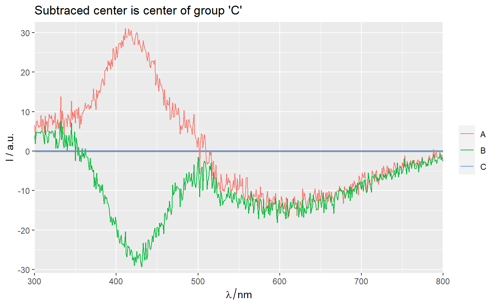
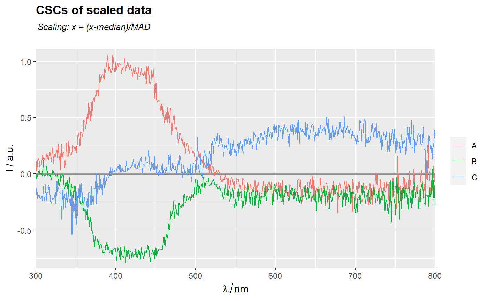
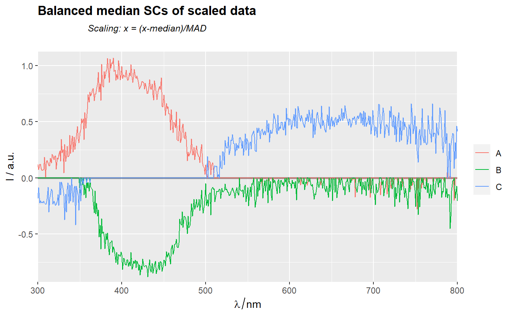

[!] Calculate common center subtracted group centers of spectroscopic data
center_subtracted_centers.RdFunction calculates common center subtracted group centers of spectroscopic data. In other words, function calculates centers (i.e., means, medians) for each indicated group. Then common center (e.g., a center of all data, a balanced center of all data, a center of certain group or a known spectrum) is subtracted from group centers.
center_subtracted_centers( sp, by = stop("Argument 'by' is missing."), FUN = median, Center = NULL, balanced = FALSE, balance.FUN = mean, show.all = FALSE, show.balanced = FALSE )
Arguments
| sp |
|
|---|---|
| by | Name of grouping variable. |
| FUN | Function (default is |
| Center | One of the following options to select the common center
tendency (CCT) that will be subtracted from other CTs: |
| balanced | Logical. If |
| show.all | logical. If |
| show.balanced | logical. If |
Value
hyperSpec object with common center tendency subtracted center
tendencies (i.e. spactra) of each group (e.g. mean-subtracted group means,
median-subtracted medians etc.).
Details
In context of this function, a center is a mean, a median or similar statistic calculated at each wavelangth.
Examples
library(spHelper) # === Common center of all spectra as the subtracted center ================ CSCs <- center_subtracted_centers(sp = Spectra2, by = "gr") # ggplot2 type plot -------------------------------------------------------- qplot_sp(CSCs, names.in = "gr") + ggtitle("CSCs - center subtracted centers")# R base type plot --------------------------------------------------------- names <- CSCs$gr plot(CSCs, col = names)title("CSCs - center subtracted centers")# === Center of a certain group as the subtracted center =================== center_subtracted_centers(Spectra2, "gr", Center = "A") %>% qplot_sp(names.in = "gr") + ggtitle("Subtraced center is center of group 'A'")center_subtracted_centers(Spectra2, "gr", Center = "C") %>% qplot_sp(names.in = "gr")+ ggtitle("Subtraced center is center of group 'C'")# === Balanced center as the subtracted center ============================= center_subtracted_centers(Spectra2, "gr", balanced = TRUE) %>% qplot_sp(names.in = "gr")+ ggtitle(subt("Balanced center subtraced centers (BCSCs)", "Balanced = a mean of all group centers\n" %++% "Balanced center is mean"))#> Warning: font metrics unknown for character 0xa#> Warning: font metrics unknown for character 0xa#> Warning: font metrics unknown for character 0xa#> Warning: font metrics unknown for character 0xa#> Warning: font metrics unknown for character 0xa#> Warning: font metrics unknown for character 0xa#> Warning: font metrics unknown for character 0xa#> Warning: font metrics unknown for character 0xa#> Warning: font metrics unknown for character 0xa#> Warning: font metrics unknown for character 0xa#> Warning: font metrics unknown for character 0xa#> Warning: font metrics unknown for character 0xa#> Warning: font metrics unknown for character 0xa#> Warning: font metrics unknown for character 0xa#> Warning: font metrics unknown for character 0xa#> Warning: font metrics unknown for character 0xa#> Warning: font metrics unknown for character 0xa#> Warning: font metrics unknown for character 0xa#> Warning: font metrics unknown for character 0xa#> Warning: font metrics unknown for character 0xa#> Warning: font metrics unknown for character 0xa#> Warning: font metrics unknown for character 0xa#> Warning: font metrics unknown for character 0xa#> Warning: font metrics unknown for character 0xa#> Warning: font metrics unknown for character 0xa#> Warning: font metrics unknown for character 0xa#> Warning: font metrics unknown for character 0xa#> Warning: font metrics unknown for character 0xa#> Warning: font metrics unknown for character 0xa#> Warning: font metrics unknown for character 0xa#> Warning: font metrics unknown for character 0xa#> Warning: font metrics unknown for character 0xa#> Warning: font metrics unknown for character 0xa#> Warning: font metrics unknown for character 0xa#> Warning: font metrics unknown for character 0xa#> Warning: font metrics unknown for character 0xa#> Warning: font metrics unknown for character 0xa#> Warning: font metrics unknown for character 0xa#> Warning: font metrics unknown for character 0xa#> Warning: font metrics unknown for character 0xa#> Warning: font metrics unknown for character 0xa#> Warning: font metrics unknown for character 0xa#> Warning: font metrics unknown for character 0xa#> Warning: font metrics unknown for character 0xa#> Warning: font metrics unknown for character 0xa#> Warning: font metrics unknown for character 0xa#> Warning: font metrics unknown for character 0xa#> Warning: font metrics unknown for character 0xa#> Warning: font metrics unknown for character 0xa#> Warning: font metrics unknown for character 0xa#> Warning: font metrics unknown for character 0xa#> Warning: font metrics unknown for character 0xa#> Warning: font metrics unknown for character 0xa#> Warning: font metrics unknown for character 0xa#> Warning: font metrics unknown for character 0xa#> Warning: font metrics unknown for character 0xa#> Warning: font metrics unknown for character 0xa#> Warning: font metrics unknown for character 0xa#> Warning: font metrics unknown for character 0xa#> Warning: font metrics unknown for character 0xa#> Warning: font metrics unknown for character 0xa#> Warning: font metrics unknown for character 0xa#> Warning: font metrics unknown for character 0xa#> Warning: font metrics unknown for character 0xacenter_subtracted_centers(Spectra2, "gr", balanced = TRUE, balance.FUN = median) %>% qplot_sp(names.in = "gr") + ggtitle(subt("Balanced center subtraced centers (BCSCs)", "Balanced center is median"))# === Scaled data ========================================================== MED <- apply(Spectra2,2,median) MAD <- apply(Spectra2,2,mad) # median absolute deviation scale(Spectra2,center = MED, scale = MAD) %>% center_subtracted_centers(by = "gr") %>% qplot_sp(names.in = "gr") + ggtitle(subt("CSCs of scaled data","Scaling: x = (x-median)/MAD"))scale(Spectra2,center = MED, scale = MAD) %>% center_subtracted_centers(by = "gr", balanced = TRUE, balance.FUN = median) %>% qplot_sp(names.in = "gr") + ggtitle(subt("Balanced median SCs of scaled data", "Scaling: x = (x-median)/MAD"))# === Add curves of common & balanced central tendencies ================= center_subtracted_centers(Spectra2, "gr", show.balanced = TRUE, show.all = TRUE) %>% qplot_sp(names.in = "gr") + ggtitle(subt("Curves of common & balanced centers added", "Imbalanced center subtracted centers"))center_subtracted_centers(Spectra2, "gr", balanced = TRUE, show.balanced = TRUE, show.all = TRUE) %>% qplot_sp(names.in = "gr")+ ggtitle(subt("Curves of common & balanced centers added", "Balanced center subtracted centers"))center_subtracted_centers(Spectra2, "gr", Center = "C", show.balanced = TRUE, show.all = TRUE) %>% qplot_sp(names.in = "gr")+ ggtitle(subt("Curves of common & balanced centers added", "Group 'C' center subtracted centers"))